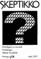
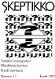
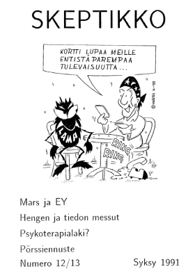
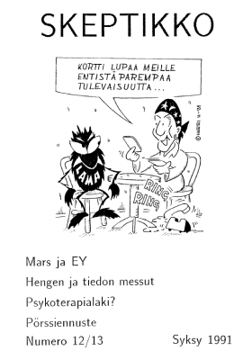
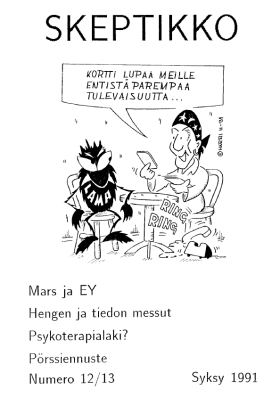
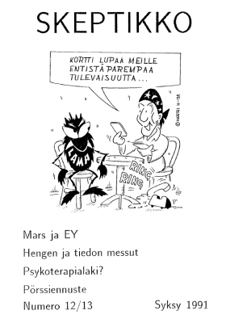

Skeptikko-lehti 1991
Ellei sinulla jo ole tietokoneellasi pdf-muodossa olevan tiedoston lukemiseen tarvittavaa
Acrobat Reader -ohjelmaa, saat sen ladattua maksutta tästä kuvakkeesta:

Skeptikko on Skepsis ry:n nykyään neljä kertaa vuodessa ilmestyvä jäsenlehti. Tästä verkkoversiosta löydät koko lehden sisällön PDF-muodossa.
 Skeptikko 10, talvi 1991
- Hannu Karttunen: Tympäisee
- Nils Mustelin: Astrologia, taikausko, moraali
- Matti Virtanen: Eduskunta hyväsksyi Steiner-koululain
- Timo Kaitaro: Voiko persoonallisuutta arvioida käsialan perusteella?
- Veijo Saano: Luonnonlääkkeet ja homeopatia
- Lukijoilta
- Kolmas maailmansota
- Skepsiksen tiedotuksia
- Kutsu Skepsiksen vuosikokoukseen
- Studia Skeptica -luentosarja
- English summary
  Skeptikko 11, kevät 1991
Skeptikko 11, kevät 1991
- Pekka Roponen: ”Vaihtoehtolääketiede” – vaihtoehtoja mille?
- Veijo Saano: Homeopatia tieteen puntarissa
- Gustaf Mattson: Teosofeja ja atomeja
- Tommi Savolainen, Matti Virtanen: Lehdistökatsaus keväältä 1991
- Keskustelua
- Tulevia tapahtumia
- Randi taas Suomessa
- Euroopan skeptikoiden kokous
- Ennustuksia
- Ruotsintipat
- Jäsenkysely
  Skeptikko 12/13, syksy 1991
 Skeptikko 12/13, syksy 1991
- Pekka Roponen: Usko ja tieteisusko
- Palvelukseen halutaan
- Matti Virtanen: Mars ja EY epäilyksen alaisena
- Markku Javanainen: Hengen ja tiedon messut
- Pekka Roponen: Kuka saa harjoittaa psykoterapiaa
- Tommi Savolainen, Matti Virtanen: Lehdistökatsaus loppuvuodelta 1991
- Matti Virtanen: Skeptikot järjestäytyvät Virossa
- Matti Virtanen: Okkultistisia atomeja
- Hannu Karttunen: Kirja-arvostelu: Tähtien lähettiläs
- Keskustelua
- Matti Virtanen: Syytettyjen penkillä
- Uri Gellerin avoin kirje
- James Randin avoin kirje
- Matti A. Miettinen: Kirje Skeptikkoon
- Skeptisiä pilkkeitä
- Markku Javanainen: Rajatiedon pörssiennuste 1992
- Hannu Suomela: Biocloaca-terapia
- Timo Kaitaro: Nuoruuden molekyyli?
- Vuoden 1991 Huuhaa-palkinto
- Jäsenkysely
- Jäsenasiaa
- English summary
Kaikkien artikkelien © Copyright 1991 Skeptikko-lehti ja kirjoittaja.
Kirjoitukset vapaasti siteerattavissa ja levitettävissä ei-kaupallisiin tarkoituksiin, lähteeksi mainittava kirjoittajan lisäksi Skeptikko-lehti numeroineen.

  Skeptikko 12/13, syksy 1991
 Skeptikko 12/13, syksy 1991

{kind=link}